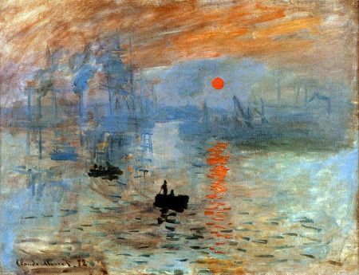
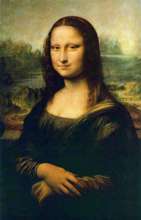
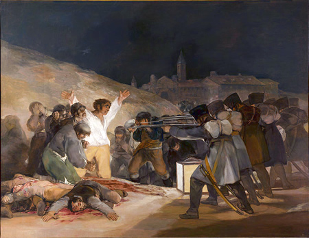
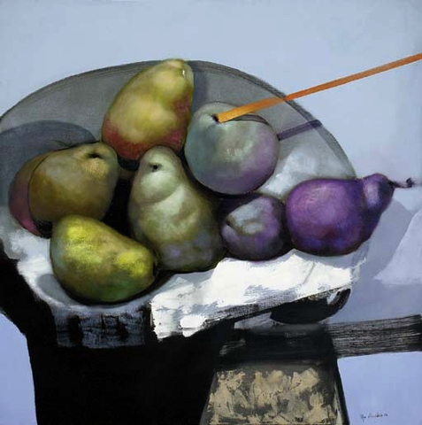

ALGUNOS PINTORES FAMOSOS
Acontinuacion presentaremos algunos pintores que considero que han revoluciando en el mundo del arte y la pintura, tomando en cuenta tambien pintores panamaeños.
PABLO PICASSO
Pablo Picasso (1881-1973), pintor español, es posiblemente el pintor más famoso del mundo y, sin duda, el pintor más famoso del siglo XX. Además de sus méritos artísticos como uno de los líderes del movimiento cubista, han contribuido a su popularidad su alta cotización en el mercado del arte y las historias sobre su turbulenta vida amorosa.


Algunas Obras de Pablo Picasso
Mostrar/Ocultar
Niño con Paloma
Paisaje Mediterraneo
Las Señoritas de Avignon
VAN GOGH
Vincent van Gogh (1853-1890), pintor holandés y figura destacada del Postimpresionismo, es el pintor favorito por excelencia. Sus fans simpatizan con la interpretación expresiva de los motivos de sus cuadros, sus colores vivos, sus pinceladas sueltas y una historia dramática entre la pasión por el arte, el fracaso comercial y la locura.
Algunas Obras de Van Gogh
Mostrar/Ocultar
La Noche Estrellada
Terraza de Café por la Noche
Iglesia Auvers
CLAUDE MONET
Pintor francés, es otro de los pintores favoritos de los aficionados a la pintura. Pero además de contar con el favor del público general, cuenta con el respaldo académico por su importancia en la historia del arte como uno de los fundadores del Impresionismo. De hecho, el nombre de este movimiento artístico proviene de su cuadro Impresión, salida del sol (1873).
Algunas Obras de Claude Monet
Mostrar/Ocultar

Impresión, Sol Naciente
Campo de Amapolas
Jardín de Giverny
LEONARDO DA VINCI
Pintor italiano y arquetipo del hombre del Renacimiento, humanista de múltiples talentos y visionario. Algunos de sus dibujos y pinturas están entre los más famosos del mundo, pero su popularidad va más allá de sus logros en el ámbito de la práctica artística. Un personaje histórico excepcional, rodeado de un aura de misterio de la que se ha surtido la industria del entretenimiento aumentando su fama.

Algunas Obras de Leonardo DaVinci
Mostrar/Ocultar
La Scapigliata
La Última Cena

La Mona Lisa
FRANCISCO DE GOYA Y LUCIENTES
Pintor español considerado como uno de los iniciadores de la estética del Romanticismo y precursor de las vanguardias pictóricas del siglo XX con sus obras maduras. También es famoso por su talento como retratista al representar el aspecto psicológico de sus modelos más allá de su apariencia.


Algunas Obras de Francisco Goya
Mostrar/Ocultar

El 3 de Mayo de 1808 en Madrid
El entierro de la sardina
El sueño de San José
PINTORES PANAMAEÑOS
JUAN MANUEL CEDEÑO

Nació en la Villa de Los Santos el 28 de diciembre de 1915. Hijo de del Señor Celio Cedeño y Josefa Henríquez de Cedeño, el penúltimo de quince hermanos.
Juan Manuel Cedeño: Era multifacético, un sujeto renacentista. Además de pintor, fue muralista, dibujante, restaurador y docente en la Universidad de Panamá y en la Escuela Nacional de Pintura.
En esta última ocupó el cargo de director. Pero es como pintor retratista que sobresale con ingenio superior.


Algunas Obras de Manuel Cedeño
Mostrar/Ocultar
Sol y Sombra
Los Próceres Nuestros
La Tuna
OLGA SINCLAIR
Nació en 1957, hija del reconocido pintor Alfredo Sinclair que se convirtió en su primer profesor. Durante los años setenta estudió en la Escuela de Artes Aplicadas y Oficios Artísticos, además de recibir clases de dibujo clásico en Los Estudios Arjona de Madrid, España. A su regresos a Panamá en 1979, ingresó a la Universidad Santa Maria La Antigua, en la que se graduó en la carrera de Licenciatura en Diseño de Interiores.
Es la presidenta de la Fundación Olga Sinclair, asociación sin fines de lucro que busca resaltar el talento infantil, con las artes plásticas y la cultura.

Algunas Obras de Olga Sinclair
Mostrar/Ocultar

Bodegón en Azul
La Mantilla de Inés